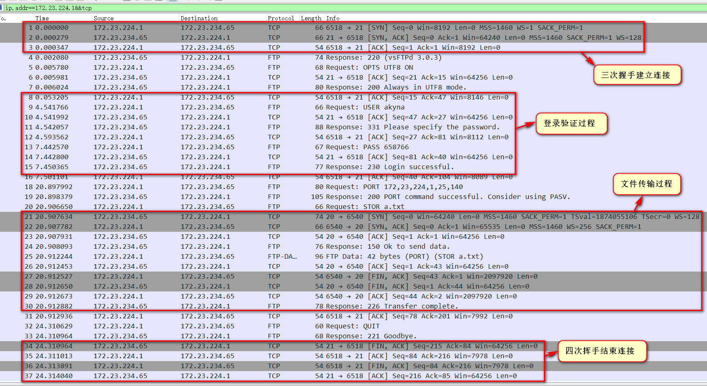
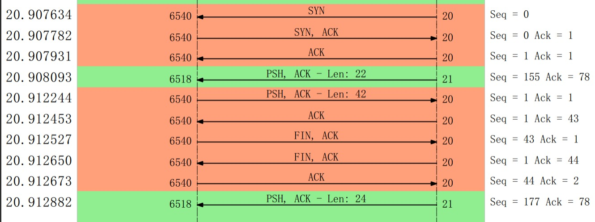
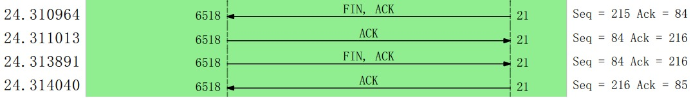

通过 Wireshark 分析 TCP 原理
使用Wireshark作为抓包工具，通过ftp文件上传过程分析tcp原理，主要分析过程包括三次握手建立连接的过程，文件传输的过程，四次挥手断开连接的过程。
设备信息
- 主机：安装了ftp的window11（ip:172.23.224.1）
- 虚拟机：安装了vsftpd的wsl2（ubuntu18）(ip:172.23.234.65)
操作与分析过程
打开Wireshark进行捕获
- 选择**vEthernet(WSL)**连接进行捕获。
- 使用过滤表达式
ip.addr==172.23.234.65&&tcp进行捕获。
通过ftp上传文件
1PS C:\Users\akyna> ftp 172.23.234.65
2连接到 172.23.234.65。
3220 (vsFTPd 3.0.3)
4200 Always in UTF8 mode.
5用户(172.23.234.65:(none)): akyna
6331 Please specify the password.
7密码:
8230 Login successful.
9
10ftp> put a.txt
11200 PORT command successful. Consider using PASV.
12150 Ok to send data.
13226 Transfer complete.
14ftp: 发送 42 字节，用时 0.00秒 42000.00千字节/秒。
可见已经传输成功。
对捕获的数据进行分析
回到Wireshark，分析捕获的数据：

上图已经包括了三次握手建立连接，登录验证，文件传输，四次挥手结束连接这几个主要的过程。
下面通过生成流量图进行具体分析：
（一）三次握手建立连接

-
第一次握手：client通过6518端口向server发送连接请求，发送SYN和Seq，server在端口21进行监听并接收到请求。
-
第二次握手：server监听到请求后发送SYN，ACK和Seq，client接收到回复。
-
第三次握手：client接收到恢复后发送Seq（等于刚接收到的Ack的值）和Ack，server接收到并确认Seq正确，完成连接。
（二）文件传输过程

- 首先，还是三次握手在client端口6540和server端口20之间建立连接，这两个端口用于传输数据；
- 接着，server端口21回复"Response 150 Ok to send data"给client端口6518，含PSH标识，表明可以开始传输数据；
- 然后，client开始发送数据包，长为42，且含PSH，表示可以接收数据，server接收到后回传的Ack应该加上数据包长，即1+42；
- 接着，client发送了FIN标识，表明发送完毕，server发送了FIN标识，表明将停止接收，client发送ACK确定server可以停止接收；
- 最后，client端口6518回复"Response 226 Transfer complete"给server端口21，表明传输完毕。
（三）四次挥手结束连接

-
第一次挥手：server发送了FIN标识，向client确认是否可以关闭连接；
-
第二次挥手：client接收到FIN，发送ACK，确定server可以关闭连接，这时server确定ACK正确后将进入半关闭态，还可以接收client发送的数据；
-
第三次挥手：这次由client发送FIN标识，让server真的关闭连接；
-
第四次挥手：server关闭连接，发送ACK向client确认已关闭,，至此，ftp通信完毕。